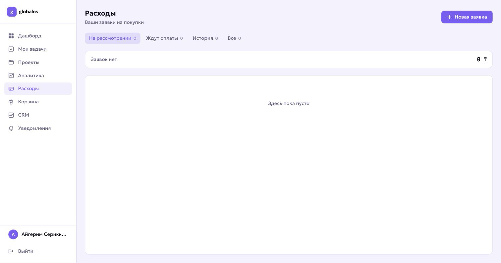
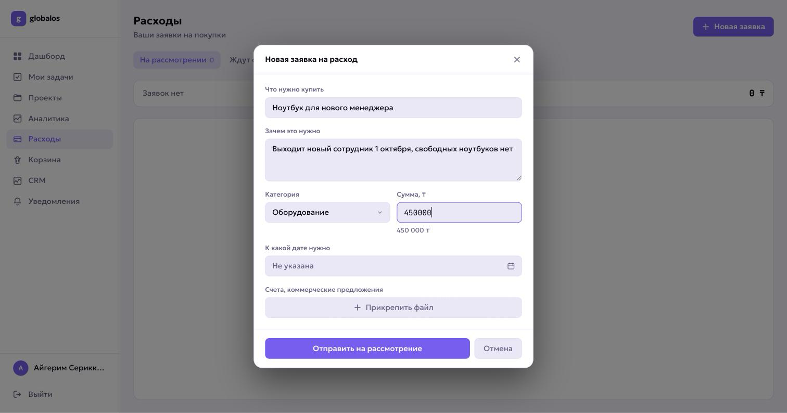
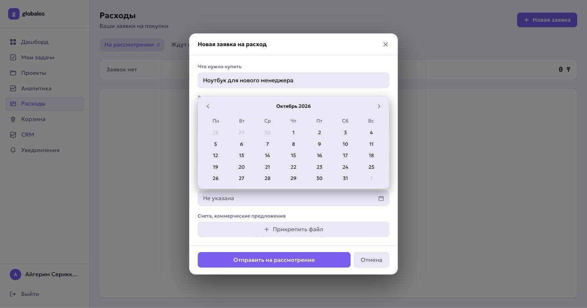
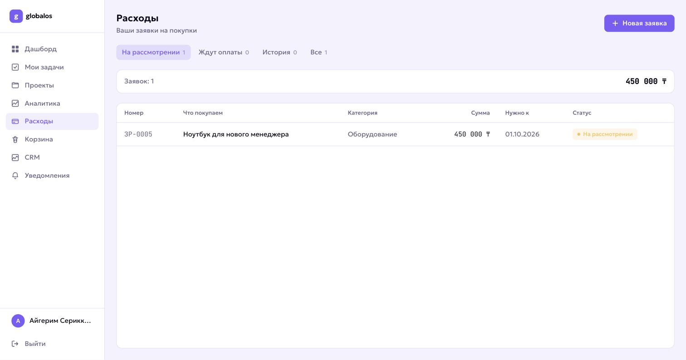
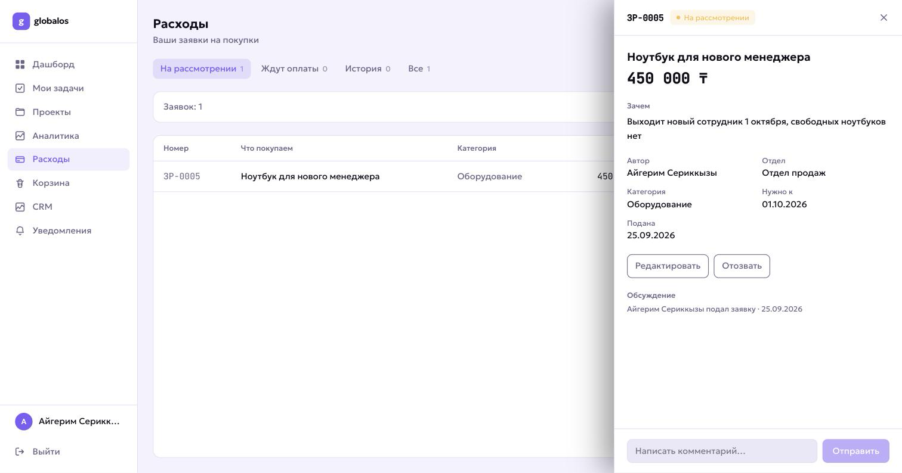
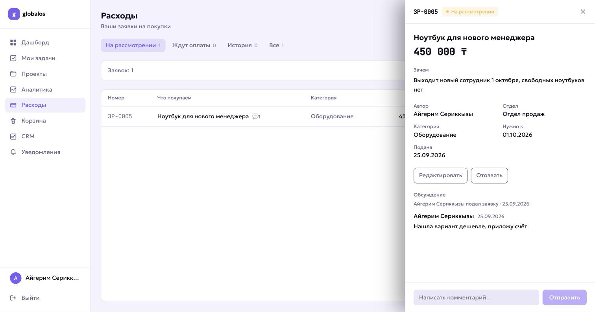

Раздел «Расходы» в TaskHub — Globalos
Нужен ноутбук, программа, мебель или услуга для работы — не пишите в личные сообщения и не ловите руководителя в коридоре. Подайте заявку в TaskHub: она не потеряется, вы будете видеть, на каком она этапе, а решение останется в системе.
Пункт в левом меню, между «Аналитикой» и «Корзиной». Вы видите только свои заявки — чужие вам не показываются.

Кнопка справа сверху. Откроется форма из четырёх полей:
| Что нужно купить | Конкретно, с количеством.«Два монитора для дизайнера», а не «техника в отдел». |
| Зачем это нужно | Главное поле — по нему принимается решение.Объясните, что не получается делать сейчас и что изменится после покупки. «Выходит новый сотрудник 1 октября, свободных ноутбуков нет» — понятно. «Надо для работы» — нет. |
| Категория | Оборудование, ПО и подписки, услуги, хознужды, маркетинг или прочее. |
| Сумма | В тенге, можно примерную.Под полем сразу показывается, как сумма прочиталась — проверьте, что не ошиблись на разряд. |

«К какой дате нужно» — выберите в календаре. Если жёсткого срока нет, поле можно не трогать, но с датой заявку проще оценить.

Счёт или коммерческое предложение сильно ускоряют решение. Нажмите «Прикрепить файл» и добавьте всё, что есть: счёт от поставщика, ссылку на товар, скриншот цены. Без этого мы можем вернуть заявку с просьбой уточнить цену — и вы потеряете неделю до следующего разбора.
Кнопка «Отправить на рассмотрение». Заявка появится в списке с номером вида ЗР-0042 — по нему удобно ссылаться в разговоре.

| На рассмотрении | Заявка в очереди. Пока она в этом статусе, вы можете её поправить или отозвать. |
| На доработку | Нужны уточнения — что именно, написано в комментарии к решению. Исправьте заявку, и она автоматически вернётся на рассмотрение. |
| Одобрено | Покупку согласовали. Дальше её оплачивают — ждите смены статуса. |
| Оплачено | Деньги перечислены. В карточке видно, сколько потратили по факту. |
| Отклонено | Отказ. Причина — в комментарии к решению. Это не запрет спрашивать: если обстоятельства изменились, подайте новую заявку с новыми доводами. |
Нажмите на строку в списке — справа откроется карточка. В ней вся история: кто подал, что решили и когда, переписка.

Внизу карточки есть поле для комментария. Пишите туда — не в личные сообщения: переписка останется вместе с заявкой, и её увидит тот, кто будет принимать решение. Ответ придёт вам уведомлением — колокольчик в левом меню.
